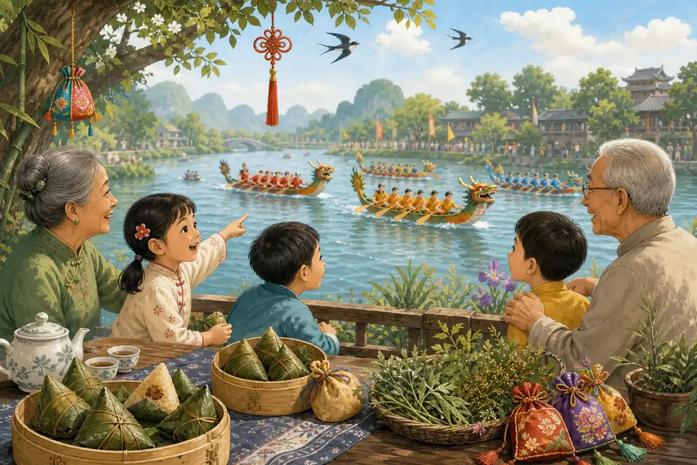
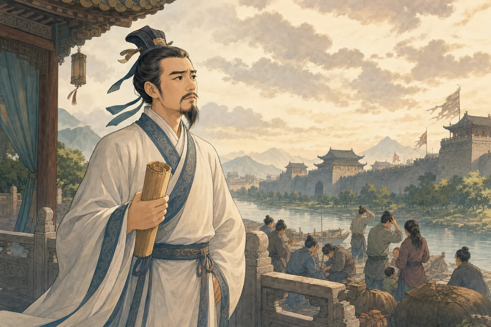
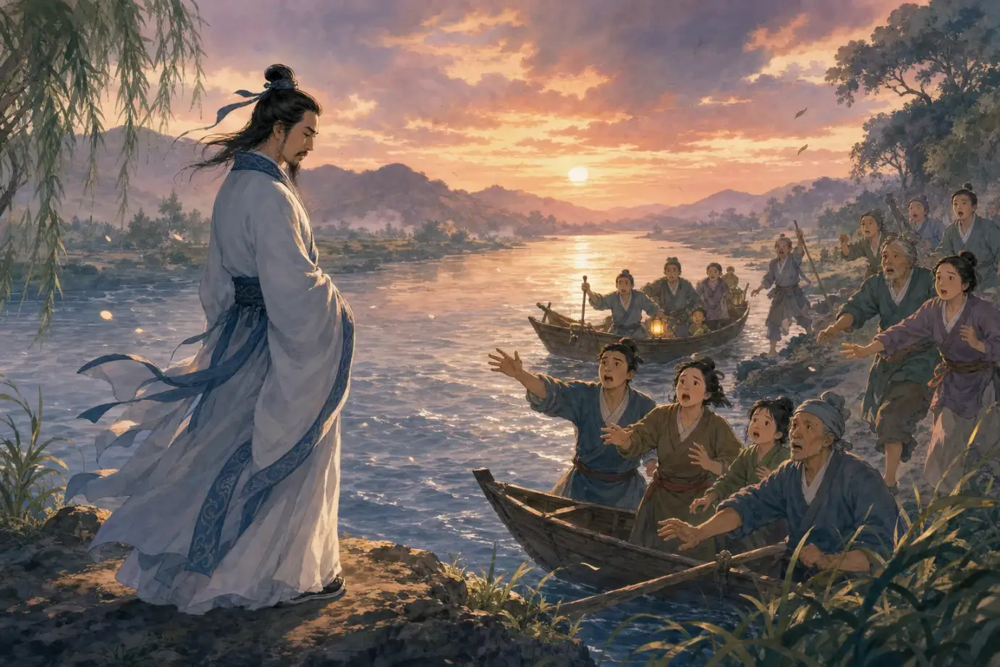
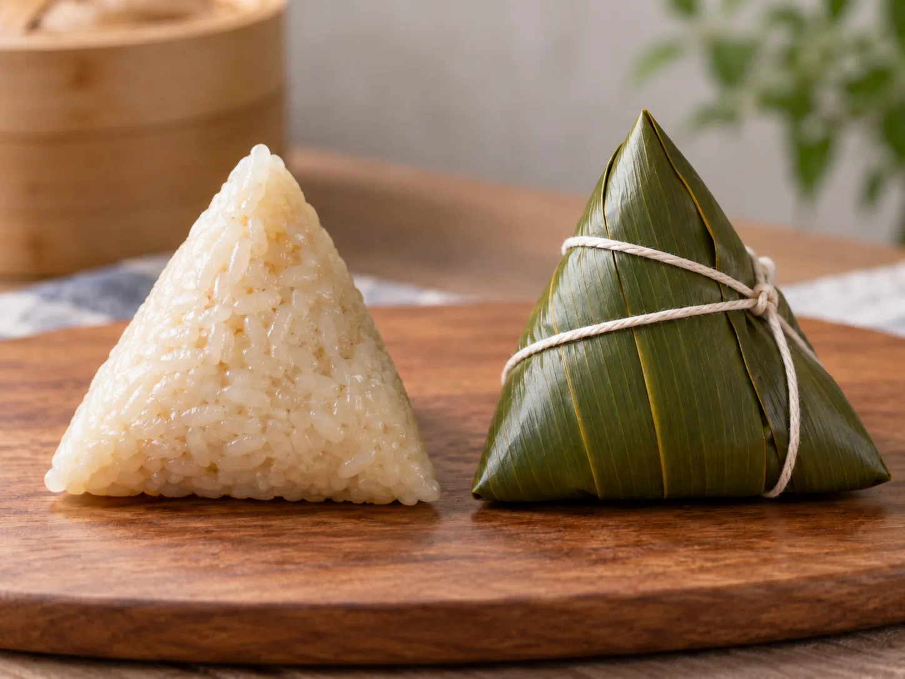

端午节：赛龙舟与屈原
Dragon Boat Festival: Dragon Boats and Qu Yuan
Page 1
鼓声一响，龙舟出发
The Drum Sounds, and the Dragons Go

A dragon boat has a dragon-shaped head. When the drum sounds, the whole team dips its paddles together.
咚！咚！咚！鼓手坐在船头，二十多支桨几乎同时落进水里。长长的船像一条贴着水面飞奔的龙。
这就是Duānwǔ Jié · 农历五月初五的传统节日。最热闹的声音。端午节在农历五月初五，很多地方会赛龙舟、吃zòngzi · 用叶子包裹糯米和馅料后煮熟的传统食物。。有些家庭还会挂上香草，或给孩子佩戴小香包。
鼓手为什么要一直敲鼓？因为这么多人挤在一条窄船上，光有力气还不够。桨手要跟着鼓点一起划，船尾的人还要用一支长桨掌握方向。只要几个人快了一点或慢了一点，船就可能摇晃。整条龙舟必须像一支队伍那样一起动。
今天，赛龙舟已经是一项讲究速度和配合的比赛。可是，龙舟和粽子为什么会出现在同一个节日里？人们最常听到的解释，要从两千多年前的一位诗人说起。
The drum goes boom, boom, boom! The drummer sits near the front, and more than twenty paddles dip into the water almost at once. The long boat races forward like a dragon skimming across the river.
This is the liveliest sound of Duānwǔ Jié · 端午节 · A traditional festival held on the fifth day of the fifth lunar month.. The holiday falls on the fifth day of the fifth lunar month. In many places, people race dragon boats and eat zòngzi · 粽子 · A traditional food of glutinous rice and fillings wrapped in leaves and cooked.. Some families also hang fragrant plants or give children small scented bags.
Why does the drummer keep beating? With so many people in one narrow boat, strength is not enough. The paddlers must follow the drum and row together. At the back, one teammate uses a long oar to steer. If a few paddlers move too early or too late, the boat can wobble. The whole dragon boat has to move as one team.
Today, dragon boat racing is a sport built on speed and teamwork. But why do dragon boats and zongzi belong to the same festival? The best-known explanation begins with a poet who lived more than two thousand years ago.
Page 2
屈原为什么来到江边？
Why Did Qu Yuan Go to the River?

Qu Yuan was a poet who also worked beside the king and helped him make decisions.
两千多年前，中国这片土地上有几个互相争斗的国家。Qū Yuán · 战国时期楚国诗人，后来许多端午故事都与他联系起来。住在其中的Chǔ · 战国时期的重要诸侯国之一。。他会写诗，也在国王身边帮助他作决定。
屈原很爱自己的家乡。他劝国王小心强大的敌人，也希望楚国变得更好。可是其他人说了他的坏话，国王渐渐不再相信他，还让他离开了。
多年后，敌军攻下了楚国的都城。这个消息让屈原心碎。在最广为流传的故事里，他来到Mìluó Jiāng · 湖南的一条河，与屈原的故事和端午习俗相连。边，走进江水，再也没有回来。消息很快传到了附近的村庄。
More than two thousand years ago, several states were fighting for power in the land that is now China. Qū Yuán · 屈原 · A poet of the state of Chu later connected with many Dragon Boat Festival stories. lived in one of them, called Chǔ · 楚国 · One of the major states of ancient China during the Warring States period.. He wrote poems and worked beside the king, helping him make decisions.
Qu Yuan loved his home. He warned the king about a powerful enemy and wanted Chu to become stronger. But other people spoke against him. The king stopped trusting Qu Yuan and sent him away.
Years later, an enemy army captured the capital of Chu. The news broke Qu Yuan's heart. In the best-known story, he went to the Mìluó Jiāng · 汨罗江 · A river in Hunan linked with the story of Qu Yuan and Dragon Boat Festival traditions. and never returned. Word of what had happened soon reached the nearby villages.
Page 3
村民们划船寻找屈原
The Search on the River

In the legend, people hurry out in boats to search for Qu Yuan, beating drums and calling his name.
村民们马上跳上小船。他们用力划桨，在江上一遍遍寻找屈原。有人敲鼓，有人大声呼喊，希望鱼和水里的生物不要靠近他。
传说还说，人们把米团投入江中，希望鱼去吃米，而不要伤害屈原。
这就是最常听到的传说怎样把端午节的两个习俗连在一起：村民划船寻找屈原，让人想到后来的龙舟竞渡；他们投入江中的米团，也和端午节的粽子联系了起来。
The villagers immediately jumped into small boats. They paddled hard and searched the river again and again. Some beat drums and others called out, hoping to keep fish and other river creatures away.
The legend also says that people threw bundles of rice into the water so the fish would eat the rice instead.
This is how the best-known legend connects two famous festival customs: the villagers’ search became associated with dragon boat racing, while the rice they threw into the river became associated with zongzi.
Page 4
粽叶里藏着什么？
What Is Inside the Leaves?

Fine leaf veins show on the wrapped zongzi. Unwrapped, it reveals cooked sticky rice.
传说讲完了，我们回到今天的端午餐桌。包粽子的叶子不只一种。北方常用长长的芦苇叶，南方常用宽大的箬竹叶。箬竹真的是竹子的一种，不过它的叶子比很多人想象中的竹叶宽得多，卷起来也不容易破。
包粽子时，先把叶子折起来，装进泡过的糯米和馅料，再盖好、折紧，用细绳扎住。煮熟以后，叶子的清香也进到了糯米里。
剥开粽叶，里面不一定都是同一种味道。有的粽子甜甜的，里面有红枣或豆沙；有的粽子是咸的，里面有肉、豆子或咸蛋黄。它们也不全是同一个形状：有些像三角形，有些又长又窄，还有些像小枕头。不同地方、不同家庭，都有自己熟悉的包法。
That is the legend. Now let us return to today’s Dragon Boat Festival table. The wrapper is not always the same kind of leaf. Long reed leaves are common in northern China. In the south, people often use the broad leaves of ruò bamboo. It really is a kind of bamboo, but its leaves are much wider than the narrow bamboo leaves you may picture. They bend without breaking easily.
To make a zongzi, a cook folds the leaves, adds soaked sticky rice and a filling, closes the bundle, and ties it with string. As it cooks, the leaves give the rice a fresh, grassy smell.
Open the leaves, and you will not always find the same flavor inside. Some zongzi are sweet, with red dates or red bean paste. Others are savory, with meat, beans, or salted egg yolk. They do not all share one shape either. Some are triangular, some are long and narrow, and some look like little pillows. Different places and families have their own ways of wrapping them.